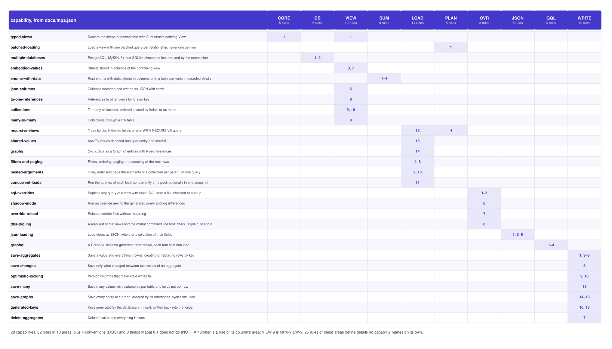

How Mabat loads, serves and saves typed aggregates
Mabat (Hebrew for “view”) loads nested, typed data from PostgreSQL, MySQL and SQLite. You declare the view of the data you want as Rust structs; Mabat plans the batched queries that fill it, lets a DBA replace any of them without touching your code, serves the view as JSON or GraphQL, and saves it back — without a session, proxies or lazy loading.
Every claim is a rule. This document explains the architecture that the MPA specification (the Mabat Persistence Architecture, docs/mpa.md) states as numbered rules, the way JPA states the contract of Java persistence providers. Where a page says what Mabat does, it cites the rule — MPA-WRITE-9 — so it can be checked against the specification, and the specification against the tests. The last page is drawn from the specification's machine-readable index, docs/mpa.json, at build time.
The question. An ORM maps rows to objects and then decides, while your code runs, which queries to send: it loads lazily, tracks changes through a session, and flushes them later. Mabat takes the other road. What shape of data does a view declare, which queries does it become, who may change them, how do they run concurrently, and how does a value get written back — and how does that compare, point for point, with an ORM?
The sources. The MPA specification v0.1 (docs/mpa.md) and its index (docs/mpa.json), the design document (docs/design.md), and the code of the mabat crates 0.1: mabat-derive (the derive), mabat-core (shapes, plans and SQL, with no database), mabat-sqlx (execution, overrides and writes), mabat-graphql and mabat-cli. The SQL on these pages is what the planner and the writer generate, abridged only where marked.
Regenerating.docs/architecture/overview/mabat-visio.py draws the ten figures as one Visio file (mabat-architecture.vsdx) with the poster kit in docs/architecture/ and its gates; it also writes the SVGs this document references and an EMF per figure for Office. build.sh runs the gates, checks every reference, renders this PDF with Chrome and checks one PDF page per section. Edit the HTML or the script, never the SVGs or the PDF.
1 · The short answer — five stages from a struct to the database, the same shape the other way for writes, and what that changes compared with an ORM.
2 · A view is a shape — what a declaration says, what is decoded from the row, and what becomes a query of its own.
3 · From shape to queries — the plan of a view, its SQL, and why 20 tasks cost five queries rather than 181.
4 · Tuning without code — override files, the checks that prepare every query at startup, shadow mode, reloads and the command line tool.
5 · Shapes of a result — trees, shared values, graphs with cycles, and two ways to load recursion.
6 · Concurrency — one connection, or a pool of them on one snapshot, level by level.
7 · JSON and GraphQL — selections, the generated schema, and paging the elements of each parent in one query.
8 · Writing an aggregate — the tree of rows, the statements, and optimistic locking with a version column.
9 · Change tracking, against an ORM — an ORM's session, snapshots and proxies, beside two values compared by generated code.
10 · Three databases — what differs between PostgreSQL, MySQL and SQLite, and what does not.
11 · The contract — every capability against the areas of the specification, read from docs/mpa.json.
The short answer
1 / 11 · at a glance
A view is a Rust struct that declares the shape of the data to load. The derive turns it into a static shape at compile time; the planner turns the shape into a tree of queries, one per relationship; the executor runs them level by level, each batched by the keys of the rows above, and decodes every row by its alias. A DBA can replace the SQL of any query, checked against the type when the application starts. Writes use the same shape the other way: an encoder builds a tree of rows, and the statements run when they are called.
Declared, not discovered. A view says everything a load will fetch: its columns, embedded values, to-one references and to-many collections MPA-CORE-1. The values it loads form an aggregate: the row, its embedded values, the rows of its owned collections and its variant tables MPA-CORE-2. There is no lazy loading MPA-NOT-4: a load never reaches the database again because code touched a field. The same table may have many views, each the shape one use of the data needs.
Generated at compile time.#[derive(View)] generates the shape as static data, and for each enabled database a decoder and an encoder; nothing is computed by reflection at run time MPA-CORE-3. Views whose column types cannot be written, or serialized as JSON, still compile and fail only when used that way MPA-WRITE-11MPA-JSON-2. mabat-core, which plans and renders SQL, has no database dependency, so planning is unit-tested without one.
Against an ORM. An ORM's unit of a read is an entity, and what else loads depends on what the code touches; its queries are decided at run time, and its state is a session. Mabat's queries are fixed by the shape and can be printed before they run MPA-PLAN-5; its values are plain structs; and its writes run when called, in your transaction MPA-WRITE-1. Page 9 compares the two on change tracking, point by point.
A view is a shape
2 / 11 · declaring
Everything a view declares is either decoded from the view's own row or loaded by a query of its own. Columns, JSON columns, embedded structs and enums stored in columns come from the row of the root query, each under an alias equal to its path. A to-one reference contributes only its foreign key to the row; the referenced rows, the elements of each collection and each level of a recursive collection are fetched by queries of their own, with the keys of the rows above.
Columns and paths. A field without a relationship attribute is a column of the view's table, named like the field unless column names it; Option<T> is nullable, and a NULL in a non-Option field fails with Error::DecodeMPA-VIEW-5. The path of a field is its name joined with . below embedded values, references, collections and variants, such as state.Blocked.reasonMPA-CORE-4, and every selected column's alias is its path MPA-PLAN-2. A json field is read and written with serde MPA-VIEW-6.
Embedded values and enums. An embedded struct lives in columns of the containing row, with an optional prefix; embedded values nest and prefixes concatenate MPA-VIEW-7. An enum with data has a tag column naming the variant; its variants' fields are columns of the row by default MPA-SUM-2, or rows of a table per variant MPA-SUM-3. Decoding is strict: a NULL or unknown tag, a missing variant row, or a non-NULL column of another variant is an error unless the enum is lenientMPA-SUM-4.
Relationships.to_one(fk) references another view by the foreign key in this row; an Option reference is None on a NULL key, and a required one whose row is missing fails with Error::MissingReferenceMPA-VIEW-8. child(fk) is a collection whose rows have fk equal to this row's key, with order_by, a many-to-many through table, an index column, a map key, or recursion with depth or recursive = "cte"MPA-VIEW-9. Invalid attributes are compile errors that name the attribute MPA-VIEW-11.
From shape to queries
3 / 11 · planning
The planner turns a shape into a tree of queries: one root query, and one per to-one reference, per collection and per variant table, at any depth, each batched by the keys of the rows above it. The number of queries depends on the shape, never on the number of rows, and no query joins two collections. The plan, and the SQL of each query, can be printed before anything runs.
One query per relationship. A view is loaded by one root query plus one query per reference, collection and variant table, each batched by the keys of the rows above: never one query per row, and never a join of two collections MPA-PLAN-1. Each query is named by its path, the root being $rootMPA-CORE-5; overrides and nested arguments address queries by these names. mabat::plan::<T>() returns the plan and Mabat::explain::<T>() its SQL, generated or overridden MPA-PLAN-5.
Aliases do the joining. Every column is selected under its path; the system aliases are $key, $parent (the parent key of a collection row), $ref.<field> (a reference's foreign key), <prefix>$tag, $index and $map_keyMPA-PLAN-2. Rows are decoded by alias, never by position, so a query may select its columns in any order MPA-PLAN-3 — which is what lets a DBA rewrite it. Children are attached in the order of their query: order_by, then the key MPA-LOAD-8.
The arithmetic. For 20 tasks with 4 subtasks each, loading this view row by row — the pattern lazy loading falls into — costs 1 + 20 + 20 + 20 + 80 = 181 queries. One query with joins costs one round trip but returns, for each task, every note repeated for every subtask. Mabat runs the five queries of the plan, whatever the number of rows. Keys are bound as one array on PostgreSQL, and on MySQL and SQLite as a list padded to a power of two so statements are reused, at most 1,000 to a child statement MPA-DB-4.
Tuning without code
4 / 11 · overrides
The SQL of any query of a view can be replaced by a file a DBA writes, with no change to the application. Because rows are decoded by alias, an override only has to select the aliases the view decodes and take the keys of the rows above. When the registry is built, every query — generated or overridden — is prepared on the database, without running, and its columns and parameters are compared with the view, so a wrong override stops the application at startup rather than corrupting a result later.
Files, by view and by query. A registry, Mabat::builder().register::<T>()…build(&mut conn), runs views with override SQL for any of their queries, from files or strings MPA-OVR-1. A view has at most one file, TaskView.toml or TaskView.sqlMPA-OVR-2. An override must select the aliases the view decodes MPA-OVR-3, and a child query must take the keys of the rows above, as :keys on any database or $1 on PostgreSQL MPA-OVR-4. A stored procedure or a view in the database is as good as any other SQL, as long as it returns those aliases.
Checked at startup.check and build prepare every query on the database without running it and compare its columns and parameters with the view MPA-OVR-5. Problems are diagnostics with the view, the query, the file and the line: M0100 to M0104 and M0301 are errors; M0105, an optional path never selected, is a warning. build fails with Error::Invalid, unless on_invalid(OnInvalid::UseGenerated) runs the generated queries in place of invalid overrides. A filter or order column that a root override does not select is Error::ColumnNotSelectedMPA-LOAD-7.
Changing them safely. A shadow override runs together with the generated query and logs a warning when their rows differ, with counts in shadow_statsMPA-OVR-6. reload reads the files again, checks them, and swaps them in atomically; invalid files leave the running overrides as they are MPA-OVR-7. The mabat tool checks, explains and scaffolds override files against a manifest the application writes, with no Rust toolchain MPA-OVR-8. Writes never use overrides MPA-NOT-5.
Shapes of a result
5 / 11 · trees, shared values, graphs
The field types of a view decide what a load returns. Plain fields make a tree of owned values, which can be cloned, compared and saved like any struct. Arc<T> shares one decoded value between everything that references the same row. Ref<T> makes the view a graph, held in an arena with each entity once, so cyclic data needs no depth limit. Recursive collections load a fixed number of levels, or every level in one recursive query.
Trees and shared values. By default a reference or element is an owned value: two tasks with the same assignee hold two equal copies. An Arc<T> reference or element is decoded once per entity of a load and shared by everything that references it MPA-LOAD-13, which saves memory and decoding where the same rows recur. Collections are Vec, BTreeMap or HashMap of a view, of Arc or of RefMPA-VIEW-10; a list placed by an index column fails on a NULL or repeated index MPA-VIEW-9.
Graphs. A view with Ref<T> fields is a graph and must be loaded with graph, else Error::GraphRequired. It returns a Graph<T> holding each entity once, with typed references and generated navigation methods such as task.manager(&graph); cycles end by themselves MPA-LOAD-14. A graph can be served as JSON only through a selection, whose finite depth unrolls it into a tree MPA-JSON-5. Saving graphs is not supported in 0.1 MPA-NOT-2.
Recursion. A collection with depth = n runs its query again for each level, at most n levels; with recursive = "cte" every level comes from one WITH RECURSIVE query whose path guard stops at cycles, for a collection that contains its own view directly MPA-PLAN-4. A cycle in the data of a cte collection fails with Error::CycleMPA-LOAD-12. A recursive view without either is a planning error: the depth of a tree must be known.
Concurrency
6 / 11 · connections and snapshots
A load runs on whatever it is given. On a connection or a transaction, every query runs in turn and sees the transaction's own uncommitted writes. On a Pooled pool, the queries of each level run at the same time, each on a pooled connection held for that query only — and on PostgreSQL, all of them can share one snapshot, so the levels of a load see the same database even while others write.
The caller's connection. Wherever a load or write takes a connection, it accepts a connection, a sqlx::Transaction, a pooled connection or a Pooled pool, and every query of a load runs on the connection given, so it sees the uncommitted writes of its transaction MPA-DB-5. That is the default because it is the one that is always correct. Queries are not pipelined on one connection MPA-NOT-8: SQLx 0.9 has no pipelining API.
A pool, level by level. With a Pooled pool the child queries of each level run together, each on a connection held for that query only, so a load uses at most the connections of its Pooled and cannot deadlock on its own pool MPA-LOAD-11. The keys of a level are collected from the rows above before its queries start. Pooled::snapshot begins REPEATABLE READ READ ONLY on one connection, exports its snapshot, and imports it on the others; it exists only for PostgreSQL, so asking for it on MySQL or SQLite does not compile.
Joining up front. Every connection imports the snapshot before the first query runs. If a query failed while others were still joining, its transaction could end under them; joining first removes that race. Pooled::read_committed works on any database and lets each query see what is committed when it runs. Graph loads run their queries one at a time on one connection, because which query reaches an entity first decides where its row comes from, and that should not vary from run to run.
JSON and GraphQL
7 / 11 · serving a view
A view can be loaded as JSON, whole or as a selection of its fields. A selection loads only what it names — only the selected columns, only the selected child queries — so a GraphQL request becomes one load of exactly the data it asks for. mabat-graphql generates the schema from the views, and turns each root field's selection set, with its arguments, into that load.
JSON.load::<T>().json(conn) returns serde_json::Value objects: columns through their type's Serialize, json columns as the JSON they hold, collections as arrays, maps as objects, references as objects or null, and enums as objects whose __typename names the variant MPA-JSON-1. select(Selection) loads only the selected fields; Selection::parse reads GraphQL-like text MPA-JSON-3. A view selected without fields loads its columns and embedded values, not its relationships MPA-JSON-4. Overrides apply to selections MPA-JSON-6.
A generated schema.mabat_graphql::schema(&pool).list::<T>("tasks").by_key::<T>("task").finish() builds an async-graphql dynamic schema from the views and every view they reach MPA-GQL-1: objects for views and embedded structs, unions for enums with data, GraphQL enums for enums without, and scalars from the column types MPA-GQL-2. List fields take where, orderBy, limit and offsetMPA-GQL-3. There are no mutations in 0.1 MPA-NOT-7.
Arguments at every level. Each root field is one load of its selection set MPA-GQL-4: no resolver per field, so no N+1. Nested arguments filter, order and page the elements of each parent inside the collection's one query — the filter follows the parent keys condition, order_by replaces the collection's order, and limit and offset apply per parent with ROW_NUMBER() OVER (PARTITION BY …)MPA-LOAD-9. Over an override, the arguments wrap it as a subquery and refer to columns by alias MPA-LOAD-10.
Writing an aggregate
8 / 11 · save and delete
The shape that loads an aggregate also saves it. save writes the view's row and makes each owned collection in the database equal to the value's; delete removes the row and everything it owns. Both run in your transaction, or a savepoint of it, and each statement runs when it is called: there is no session to flush. A #[view(version)] column makes concurrent writers fail instead of overwriting each other.
Save.save upserts the row by key — INSERT … ON CONFLICT (key) DO UPDATE on PostgreSQL and SQLite, INSERT … AS new ON DUPLICATE KEY UPDATE on MySQL — with its columns, embedded values and json fields MPA-WRITE-3. An owned collection is made equal to the value's: rows of elements that are gone are deleted with what they own, deepest first, and the others are saved with the parent's key, their position for an index list, and their key for a map MPA-WRITE-4. Keys come from the application MPA-WRITE-2; keys generated by the database are not supported yet MPA-NOT-1.
What is not written. A many-to-many collection replaces its link rows, and the linked views are not written; a to-one reference writes its foreign key only MPA-WRITE-5. An enum in columns writes its tag as a literal, so any tag column type accepts it, its variant's columns, and NULL to the others'; an enum in a table per variant upserts its variant's row and deletes the others' MPA-WRITE-6. A view of only some of a table's columns cannot be saved whole when the others are NOT NULL without a default, since an upsert must be able to insert; save_changes updates it MPA-WRITE-12.
Optimistic locking. With a #[view(version)] column, save updates the row only if it has the value's version, incrementing it, and otherwise inserts it only if no row has its key; anything else fails with Error::Conflict and the transaction is rolled back MPA-WRITE-9. MySQL counts a found row as affected by ON DUPLICATE KEY, so there the insert is INSERT … SELECT … WHERE NOT EXISTS. The new versions are written back into the value and the elements of its owned collections, so it can be saved again without reloading MPA-WRITE-10.
Change tracking, against an ORM
9 / 11 · save_changes
An ORM tracks changes transparently: the objects you load belong to a session that keeps a snapshot of each, replaces your references and collections with proxies and wrappers that load and record on their own, and at flush compares every object with its snapshot to decide what to write. Mabat tracks changes explicitly: you keep the value as it was loaded, change a copy, and save_changes(&before, &mut after) compares the two with code the derive generated, writing only the rows that differ — now, in your transaction.
How an ORM does it. JPA providers such as Hibernate keep a persistence context: an identity map with one managed object per row, a snapshot of each object's state as loaded, and a queue of pending writes. Lazy references are proxies — generated subclasses that load on first touch — and collections are replaced by the provider's own, which record changes. At flush, before a query that might see a change or at commit, each managed object is compared with its snapshot (or, with bytecode enhancement, its setters will have marked it dirty), and the differences become SQL. It is convenient and invisible, and so is when and why SQL runs.
How Mabat does it. Values are plain structs with no session behind them, so there is nothing to intercept a change. The snapshot is before, a value you hold. save_changes compares it with after through a comparison the derive generated: columns and embedded values by PartialEq (a type without it counts as changed), to-one foreign keys, owned collection elements matched by key — changed ones updated, new ones saved whole, removed ones deleted with what they own, moved ones of an index list given their position — and link tables whose keys differ. Rows that did not change produce no statement MPA-WRITE-8.
What it buys, and costs. SQL runs exactly when you call it, in your transaction or a savepoint of it MPA-WRITE-1; there is no unit of work that flushes later MPA-NOT-3, and no lazy load after a session closed, because there is none MPA-NOT-4. before can be kept across requests, cached or reloaded; it must be what the database held, and a #[view(version)] column turns a stale one into Error::Conflict instead of a wrong write MPA-WRITE-9. The two values must have the same key. In Rust, which has no runtime proxies, the same explicitness is common: SeaORM's ActiveModel marks fields Set or Unchanged by hand.
Three databases
10 / 11 · dialects
The same view loads and saves on PostgreSQL, MySQL 8 and SQLite through SQLx 0.9; each enabled database gets its own decoder and encoder, and a load runs on the database of the connection it is given. Where the databases differ, Mabat uses each one's own syntax; the shapes, plans, aliases, checks and errors are the same on all three.
PostgreSQL
MySQL 8
SQLite
Enabled by
the postgres feature, the default MPA-DB-1
the mysql feature
the sqlite feature
Keys of a batched query
one array parameter: = ANY($1)
IN (?, …), padded to a power of two so statements are reused, at most 1,000 keys a child statement MPA-DB-4
as MySQL
Keys in an override
= ANY(:keys), or $1MPA-OVR-4
IN (:keys), expanded to the placeholders
as MySQL
Key types
i16, i32, i64, String, UuidMPA-VIEW-2
also unsigned integers
also columns without a declared type, read by value
Case-insensitive match
ILIKEMPA-LOAD-5
LOWER(c) LIKE LOWER(?)
LOWER(c) LIKE LOWER(?)
Enum tag columns
any type, such as a PostgreSQL enum, read as text MPA-SUM-1
any type, such as ENUM(…), read as text
any type, read as text
Concurrent loads
Pooled::snapshot or Pooled::read_committedMPA-LOAD-11
Pooled::read_committed; a snapshot does not compile
Pooled::read_committed; a snapshot does not compile
Save: the upsert
INSERT … ON CONFLICT (key) DO UPDATEMPA-WRITE-3
INSERT … AS new ON DUPLICATE KEY UPDATE
INSERT … ON CONFLICT (key) DO UPDATE
Versioned insert, if absent
INSERT … ON CONFLICT (key) DO NOTHINGMPA-WRITE-9
INSERT … SELECT … WHERE NOT EXISTS, since ON DUPLICATE KEY counts a found row as affected
INSERT … ON CONFLICT (key) DO NOTHING
Types only some support
#[view(databases = "postgres, mysql")] limits a view to the listed databases, for field types not every enabled database can decode, such as a PostgreSQL array, or rust_decimal::Decimal on SQLite MPA-DB-2. A registry is built for one database; using it on another fails with Error::WrongBackendMPA-DB-3.
One trait, three implementations.mabat-sqlx runs everything through a Backend trait implemented for each database: how rows are fetched and decoded, how keys are read and bound, how statements and their arguments are executed, how column types are described for the checks, and how a snapshot begins. The derive generates a decoder and an encoder for each enabled database, so a view whose field type one database cannot handle fails to compile there, not at run time — unless it opts out of that database.
The same everywhere. The planner and the SQL renderer in mabat-core take a dialect, not a connection: the plan of a view, its query names, its aliases and the order of its queries do not depend on the database. The checks of overrides prepare and describe queries on whichever database the registry is built for, and the tests run on all three databases, including end-to-end suites against the Chinook sample database on each and Pagila on PostgreSQL.
The contract
11 / 11 · from docs/mpa.json
Every capability of Mabat, against the areas of the MPA specification, with the rules that define it. The matrix is drawn from docs/mpa.json when this document is built, so it cannot drift from the index; the index cannot drift from the specification, and neither from the crates, because a test fails when the derive accepts an attribute, or the crate has an error variant, that the index does not list.

Reading it. A number is a rule of its column's area: under VIEW, 9 is MPA-VIEW-9. A capability's row says where its contract is; a column says which capabilities an area of the specification serves. The areas are the sections of the specification: concepts, databases, declaring views, enums with data, loading, query planning, overrides, JSON and selections, GraphQL, and writing. Rules that define details — the errors, the decoding of a NULL, the order of children — are in the specification without a row of their own.
Written for tools.docs/mpa.json lists every capability, attribute, function, error and diagnostic with the rules that define it, and llms.txt at the root of the repository points assistants to it. Rule identifiers are never reused: a removed rule keeps its number, marked removed MPA-DOC-2. A code review, an issue or an assistant can cite MPA-WRITE-9 and mean one sentence, in one version of the contract.
What is not there. Section 12 of the specification lists what Mabat 0.1 does not do, so tools do not generate code that relies on it: keys generated by the database when saving, saving graphs, a unit of work, lazy loading, writes through overrides, filters on embedded columns, GraphQL mutations, pipelining, and schema generation or migrations — views describe existing tables MPA-NOT-1 to MPA-NOT-9.
![Five stages left to right. You declare a view, TaskView, a struct with a to-one assignee and a collection of notes. The derive generates a static shape, a decoder and an encoder per database, with no reflection. The planner builds a tree of queries named by path — $root, assignee, notes — in the database's dialect. The executor runs the root query, then each level with the keys of the rows above, decoding by alias. The database is PostgreSQL, MySQL 8 or SQLite. Below, override files feed a registry that replaces the SQL of any query, and the executor returns typed values, JSON or a GraphQL response. Below that, writing: save, save_changes and delete go through the encoder to write statements in one transaction. At the bottom, four rows compare an ORM with Mabat: the unit of a read, the queries, who owns the SQL, and state and writes.](diagrams/01-at-a-glance.svg)
![Left: the declaration of TaskView with an id key, a name, a JSON labels column, an embedded Window with prefix due_, an embedded enum State, a to-one assignee, a notes collection ordered by created_at, and a recursive children collection with depth 2; the Window struct and the State enum below it. Right: a zone for one row of task in the $root query holds four boxes: columns id and name and the JSON labels; the embedded struct as due.start and due.end in columns due_start and due_end; the enum, whose state.$tag names the variant and whose state.Blocked.reason is a column; and the reference's key, $ref.assignee. Arrows carry the keys of the rows down to three queries: assignee, a to-one reference; notes, a collection; and children, recursive to depth 2. Along the bottom, what the derive generates for each view: the shape, a decoder per database, an encoder per database, and a comparison for save_changes.](diagrams/02-view-shape.svg)
![The plan of TaskView on PostgreSQL as five queries with their SQL. $root selects id, name and assignee_id as $ref.assignee from task with a filter, order and limit. assignee, a to-one by $ref.assignee, selects from person where id = ANY($1), with the distinct $ref.assignee keys of the root rows. notes, to-many by task_id, selects id, task_id as $parent and body from note where task_id = ANY($1), ordered by created_at and id. subtasks, to-many by parent_id, selects from task where parent_id = ANY($1). subtasks.assignee, to-one, takes the $ref.assignee keys of the subtasks. Notes below: keys flow down and rows flow up; one array on PostgreSQL or a padded list elsewhere; decoding by alias. Right: the view's code, and for 20 tasks with 4 subtasks each: 5 queries with Mabat, 181 queries one per row, or one query with joins that repeats every note for every subtask.](diagrams/03-plan.svg)
![Three columns. A DBA writes SQL: an overrides/TaskView.toml file replacing the notes query with a join to note_visible, taking ANY(:keys), with shadow = true; notes below: one file per view, any query by its path, the aliases the view decodes, the keys of the rows above. Build checks every query: the builder registers the view and builds, every query is prepared without running, and compared with the view; the diagnostics M0100 to M0105 and M0301 are listed; errors stop the build with Error::Invalid, or on_invalid(UseGenerated) runs the generated query instead. Loads run the registry: an immutable registry; shadow mode runs both queries and logs differences; reload swaps checked files in atomically; nested arguments wrap an override as a subquery; writes never use overrides. Along the bottom, the command line tool without a Rust toolchain: Builder::manifest(), mabat check, mabat explain, mabat scaffold.](diagrams/04-overrides.svg)
![Four panels. A tree: task 1 and task 2 each own a copy of the person Ada. Shared values: task 1 and task 2 both point to one Arc of Ada, decoded once per load. A graph: Graph of T holds each entity once; Ada and Grace reference each other as manager and report, a cycle that ends by itself, with typed references and generated navigation. Recursion: depth = 2 runs one query per level, children and children.children; recursive = cte loads every level with one WITH RECURSIVE query whose path guard stops at cycles. Rows below give, for each, the field types, the terminals, and whether saving is supported.](diagrams/05-result-shapes.svg)
![Top: one connection runs the five queries $root, assignee, notes, subtasks and subtasks.assignee one after another. Middle: Pooled::snapshot with three connections, as lanes over time. At the start, connection 1 begins REPEATABLE READ READ ONLY and exports its snapshot; connections 2 and 3 begin and set the transaction snapshot. Level 0 runs $root on connection 1; level 1 runs assignee, notes and subtasks at the same time on connections 1, 2 and 3; level 2 runs subtasks.assignee; at the end every connection rolls back. A note says every connection joins the snapshot before the first query. Bottom: rows compare a connection, Pooled::snapshot and Pooled::read_committed by the connection given, connections, what the load sees, and graphs.](diagrams/06-concurrency.svg)
![Four stages. A GraphQL request for tasks with a where filter on name and a limit of 20, selecting name, assignee name, and notes ordered by createdAt descending with a limit of 3. The selection set becomes a Selection with fields and arguments, fragments resolved and variables applied. build_selected plans only the selected columns and child queries, three queries not five, with recursion unrolled to the selection's depth. The JSON result shows a task with its assignee and three notes. Below, the SQL of the notes query: ROW_NUMBER() OVER (PARTITION BY task_id ORDER BY created_at DESC, id) as $row, keeping rows with $row up to 3. At the right: the schema is generated from the views; one load per root field; the same without GraphQL through Selection::parse and json; overrides apply.](diagrams/07-serving.svg)
![Three columns. mabat::save of a Board: the encoder builds a tree of rows — the board row with its name, the owner's foreign key only, the state tag and variant columns and the color columns; lists, an indexed Vec, written with board_id and position, each owning its cards; labels, many-to-many, as board_label link rows only; settings, a map by name; and visibility, a table per variant. The statements, in one transaction: savepoint or begin; the upsert of the board; selecting the keys of the lists in the database; deleting the lists that are gone with their cards first; upserting the other lists and their cards; replacing the board_label links; release or commit. With a version column: an UPDATE that sets version = version + 1 where the id and the loaded version match; one row means saved; no row means insert it unless a row has its key; inserted means a new board; otherwise Error::Conflict and the transaction is rolled back. Notes: the insert if absent per database, versions written back into the value, and delete.](diagrams/08-writes.svg)